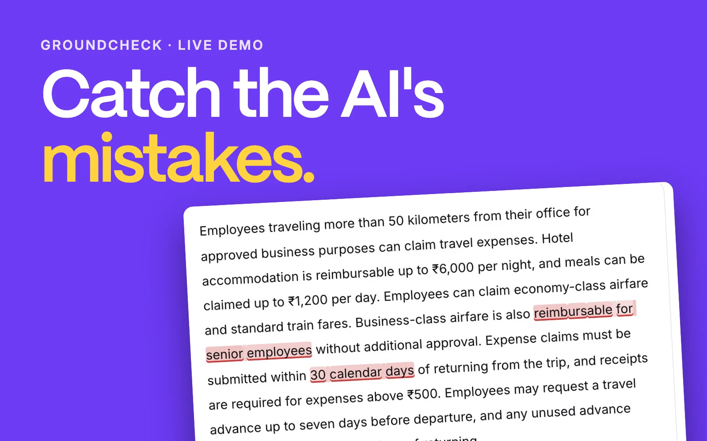
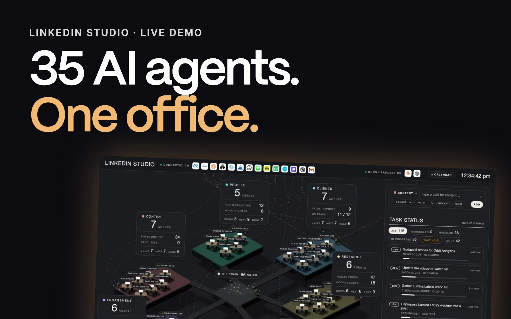
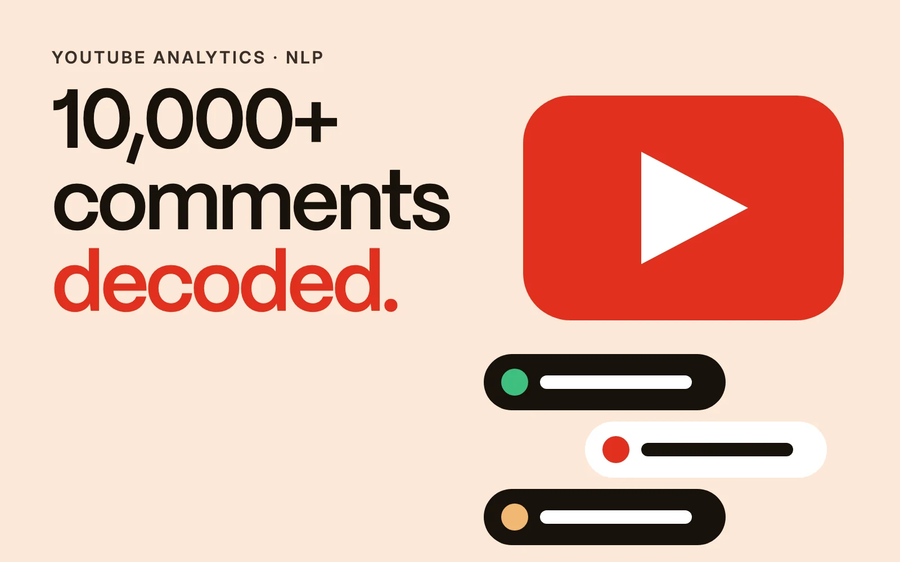
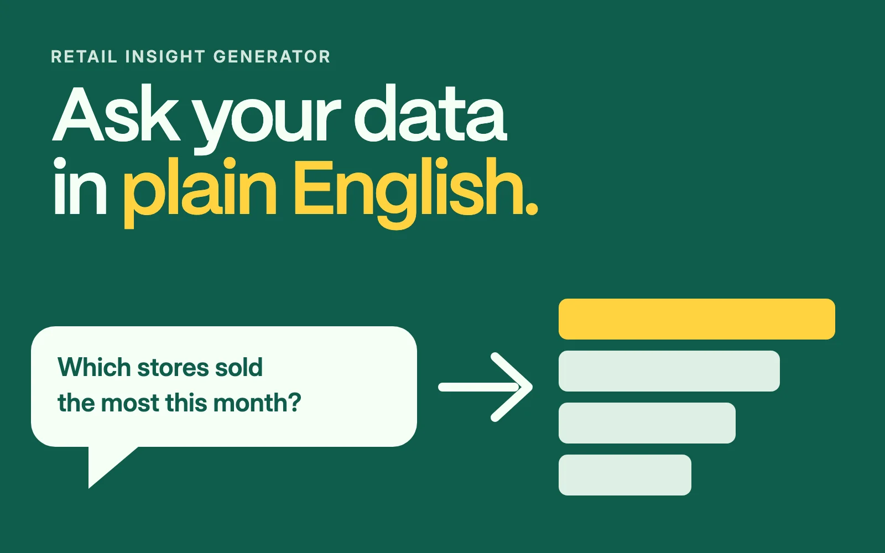
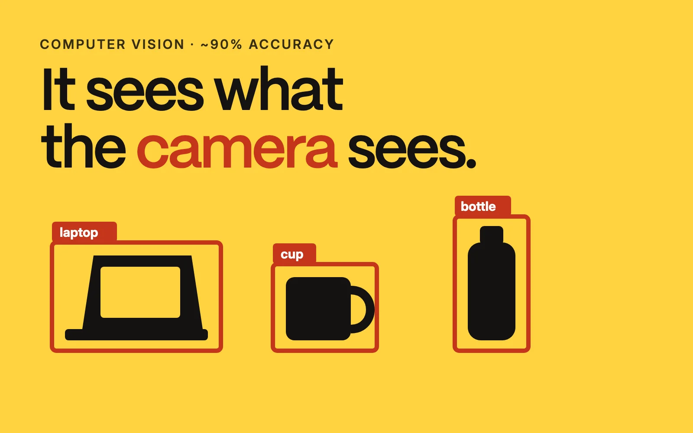
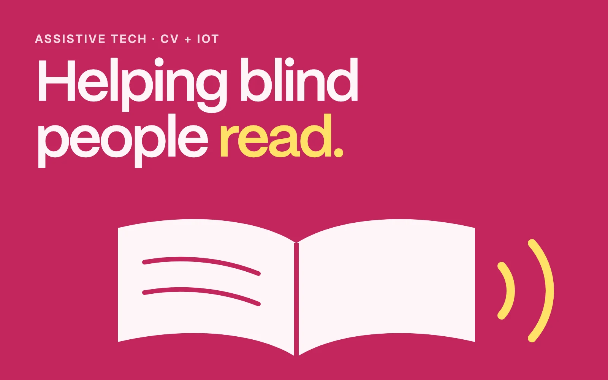
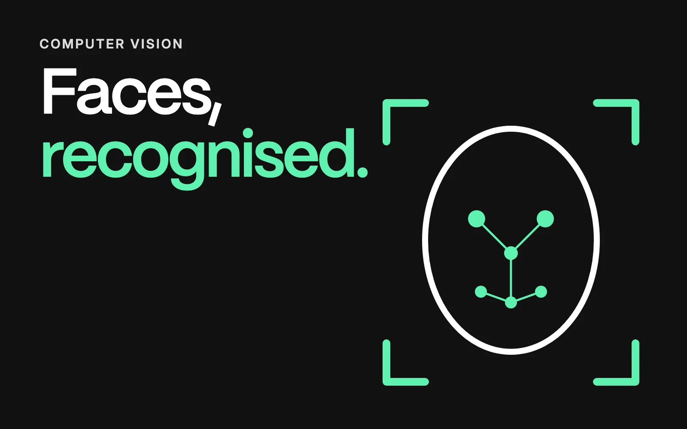
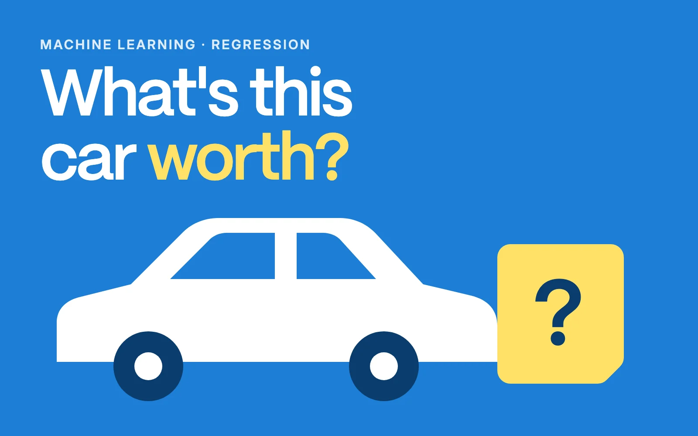

01
Data Intelligence
Turning raw information into structured insights, patterns and decisions.
Data & AI Engineer
Turning complex data, business workflows and ideas into practical AI-powered products.
The starting point
Capabilities
04+
01
Turning raw information into structured insights, patterns and decisions.
02
Designing systems that combine LLMs, retrieval, structured generation and intelligent workflows.
03
Turning repetitive business processes into workflows that can understand, decide and act.
04
Putting AI into products that people can actually use.
Selected work
04+
Independent projects
03+

AI EvaluationSpan-level hallucination detection for AI responses
Paste or upload source documents and an AI's answer, and it highlights the parts the sources don't support. In its regression suite it caught 11 of 13 planted errors with 0 false alarms. To fit Vercel's 250 MB limit I exported the model to ONNX, staying within 0.0013 of the PyTorch model's probabilities.
Python · FastAPI · ONNX Runtime · ModernBERT — built on LettuceDetect by KR Labs

AI AgentsA 3D office of AI agents for LinkedIn personalization
35 agents across 6 pods audit a client's profile, learn their voice, research their domain, draft posts and replies, and track what works. Every post, comment or DM is prepared as a draft and waits for approval. The hosted demo runs in demo mode; real agent tasks run locally.
JavaScript · Node.js · Claude Code — built on the linkedin-skills toolkit
A free daily AI and go-to-market news digest by email
A scheduled pipeline that collects news from RSS and Atom feeds, removes duplicates, ranks it by topic and emails a linked digest, with no paid APIs. A dead feed is logged and skipped rather than crashing the run, and all sources and keywords live in YAML.
Python · RSS / Atom · GitHub Actions · YAML config
Where it started
03+

NLP · ML10,000+ comments · ~90% classification accuracy
Sentiment and emotion analysis, audience engagement analysis and multiple ML classification models.
Python · Scikit-Learn · NLP · Logistic Regression · Random Forest · SVM

NL → SQLNatural language → SQL → business insight
A natural-language data query system for retail managers, connecting business questions with sales, inventory and discount data.
Python · Django · MySQL · LangChain · Google PaLM 2 · Hugging Face · ChromaDB

Computer Vision~90% prediction accuracy
A mobile-camera application for real-time object detection and classification, designed for efficient inference.
Computer Vision · Deep Learning · Real-Time Inference
Also built

Assistive technology exploring computer vision and IoT.

Computer vision for facial detection and recognition.

A machine learning regression model for vehicle prices.
An academic web application and user-experience project.
Experience
04+
Turning complex business workflows into practical AI solutions · Coimbatore
Data & AI Engineer · Jul 2026 — Present
Data Scientist · Feb 2026 — Jul 2026
AI-driven enterprise storytelling and presentation systems · Coimbatore
Data preprocessing, EDA and lead-generation insights · Delhi
IoT, automation and system integration
Currently exploring
Generative AI / LLM Applications / RAG / AI Agents / AI Automation / AI SaaS / Data Science / Machine Learning / NLP / Data Intelligence
About
I'm a Data & AI Engineer focused on building practical AI solutions that solve real business problems.
My journey started with data science and machine learning, where I learned how to turn raw data into meaningful insights. Over time, my work evolved toward Generative AI, LLMs, RAG systems, AI automation and AI-powered product development.
Today I work across data and AI engineering — understanding a problem, analysing the data and workflow behind it, designing the right architecture and turning that idea into a usable solution. My approach is simple: AI shouldn't be added just because it is possible. It should solve a meaningful problem.